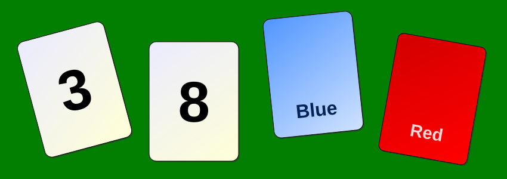

Executive Summary
This article looks at a study that took discussions people actually had and replayed them with groups of LLM agents. Tengfei Shao of the Global Education Center at Waseda University posted it to arXiv on September 17 as a preregistered study, and the material is 100 human groups working through a logic puzzle in a public corpus of chat transcripts. One agent stands in for each participant, seeded with the answer that participant had written down before the discussion began. No agent was given the answer key, and none was shown what the other participants said.
In the 45 groups that had no silent member, reasoning-mode agent groups still reach full consensus 44.4 points more often than the people they replay. One human participant in five never posted a word, which widens the raw gap, but the gap stayed once that silence was taken out of the count. Then the cards were swapped for neutral words that carry no memorized answer, and most of the agreement moved onto wrong answers. As the author sums it up, how often the agents agreed did not track how often the group was right.
Sections 1 through 6 follow the numbers the paper reports, the control runs behind them, and the limits the author draws around them. Section 7 is this article's reading of what the result means for the move to replace surveys and focus groups with agents.
Key Figures
Source: Shao, T. (2026), arXiv:2609.20543 · preregistration osf.io/5jp7s
+44.4 pts
Excess consensus in reasoning-mode agent groups
Paired across the 45 groups where everyone spoke. People 51.1%, agents 95.6%. 95% confidence interval 29.6 to 59.3
74.0%
Groups that agreed on a wrong answer
On the task whose cards became neutral words, which takes the memorized answer away. The same mode was at 12.0% on the original task
20.1% ↔ 0.2%
Share who never posted a word
People first, agents second. Agents could pass on any round and almost never used it
0.98 ↔ 0.61
How concentrated the final answers are
Herfindahl index for reasoning-mode agent groups and for human groups. Closer to 1 means one answer took the whole group
What the Agents Were Given, and What They Never Saw
The material is DeliData, a corpus released in 2023 that holds 500 groups discussing the Wason card selection task over chat, with 1,974 participants and 14,003 utterances. The task itself has been in psychology textbooks since 1968. Four cards lie face up and one rule is given, and the question is which cards you have to turn over to find out whether the rule holds. One answer is logically correct, and most people have long been known to get it wrong. Each participant writes an answer before the discussion, talks freely, then writes an answer again afterwards.

Shao split those 500 groups into 400 and 100 with a fixed hash of the group identifier. The 400 served only to set the configuration, and the 100 were held out. The SHA256 values of both lists went into an Open Science Framework preregistration on July 4, 2026, so neither list could be changed after the results came in. Only one quantity was tuned on the 400, the group improvement rate. Human groups improved in 35.8% of cases, and the configuration that came closest to that value was the one selected. No other measure was examined during calibration.
The most consequential design decision was not to let the agents work freely. A contamination check run before the main study found that current models solve this task far better than individual people even when the cards are relabelled. With the agents unconstrained, a group's improved score would come from model skill rather than from discussion. So each agent was seeded with the answer its assigned participant had written down alone, before any discussion. An agent sees its own alias, that injected answer, the four cards and the rule. It does not see the answer key, the other participants' pre-discussion answers, the conversation those people actually had, or anyone's final answer. Whatever an agent learns, it learns inside the replayed conversation.
The model was a single served build from DeepSeek (deepseek-v4-flash), called in two settings, a chat mode and a reasoning mode. Crossing those with three role-fidelity scaffolds (none, a stay-in-character instruction, and that instruction plus a per-turn re-injection of the original belief) and three seeds over 100 groups yields 1,800 confirmatory cells. Seven reasoning-mode cells (0.4%) failed on network errors, and Shao dropped them rather than refilling the slots. To see whether the same thing happens in another model family, the open-weights Qwen3-14B was served locally and run over the same 100 groups.
The paper also gathers the warnings that had already accumulated around synthetic respondents: model samples that hit the population average while collapsing the variance of the responses, and personas that flatten the diversity inside a group. Group cognition research has long found that accuracy comes from preserved diversity and independence rather than from agreement, which is why Shao treats over-convergence as a failure mode rather than a success. Of the two earlier replay studies, one used subjective questions with no ground truth, so its consensus could not be split into correct and wrong; the other matched agents to real participants but did not simulate the dialogue at all. This study simulates the dialogue and picks a task that has a right answer.
Scoring people and agents with the same code sits at the center of this study. As the author notes, identical code is not identical measurement. DeliData records a final state by carrying forward the last choice of a participant who went quiet, while an agent is forced to produce an answer at the end. How that asymmetry gets handled moves every number in the next section.
The Human Consensus Rate More Than Doubles Depending on How You Count
Full consensus means every member of a group ends on the same answer. Whether that answer is correct does not enter the definition. Simple as it reads, four scoring rules give four different values on the same 100 groups. The table has them.
| Scoring rule | Full consensus | Groups | What the rule does |
|---|---|---|---|
| Carry-forward | 24.0% | 100 | The corpus default. A silent participant's older choice stays in place |
| Submitted answers | 52.0% | 98 | Reduces the difference in how the endpoint is measured |
| Active members only | 57.0% | 100 | Reduces the difference in participation structure |
| Groups where everyone spoke | 51.1% | 45 | Serves as the baseline for the paired comparison |
The same 100 groups, scored by the same code. Change one rule and 24.0% becomes 57.0%. Table 2 of the paper.
What separates 24.0% from 57.0% is silence. In this corpus 20.1% of participants never posted during the discussion. Under a rule that requires every member's answer to match, one silent member leaves an old choice standing and drops the whole group out of consensus. In data where one person in five stays quiet, that rule pushes the consensus rate down mechanically.
Here the paper's first claim arrives. A full-consensus rate is not a property of deliberation. It is an estimate produced by decisions about who counts as a participant and how someone who did not answer gets written down. If a study reports one consensus rate for human groups, the first question is whether that value came from the 24% rule or the 57% rule.
The Gap That Survives Matched Participation
If silence is what loads the human denominator, then removing that disadvantage should make the gap disappear. Shao removed it two ways: keep only the 45 groups in which every member spoke at least once, and use the humans' actual submitted answers. The two routes reduce different kinds of error.
Among the 45 groups where everyone spoke, human full consensus is 51.1%. Chat-mode agents replaying the same groups reach 85.2% and reasoning mode 95.6%. Paired group by group, the differences are 34.1 points (95% confidence interval 19.3 to 48.9) and 44.4 points (29.6 to 59.3), and both intervals clear zero with room to spare. On the 98 groups scored by submitted answers the gaps are 34.0 points (24.1 to 44.2) and 43.9 points (34.0 to 53.7). Two routes that reduce different errors landed within half a point of each other. With no correction at all, the comparison across all 100 groups widens to 62.0 and 72.0 points, and those values mix the participation difference together with the carry-forward difference.
Which 45 groups those are deserves a separate look. Supplementary Table S3 sets out the composition of the subset. Groups where everyone spoke average 3.20 members against 3.86 across all 100, they hold 2.73 distinct pre-discussion answers against 3.07, and 9.0% of their members start out with the correct answer against 11.2%. So the author pins down how to read the number. It "should be interpreted as a participation-matched sensitivity estimate for predominantly two- to five-member groups that generally began in disagreement and with low initial accuracy, rather than as evidence that the same difference applies to larger groups." Two considerations narrow the concern without removing it. People and agents are measured inside the same group, so group size does not take one side, and the submit-based route, whose composition differs, lands within 0.5 points.
A simulation stops talking once it reaches consensus, so the stopping rule could have inflated the rate on its own. Shao switched it off and ran every group to a fixed horizon. Chat mode came in at 87.0% and reasoning mode at 100.0%, against the original 86.0% and 96.0%. In the cross-family run with Qwen3-14B, full consensus was 65.7%, far above the human 24.0%. The author is explicit that this check reuses the same groups and the same arm, which makes it an exploratory signal rather than an independent replication. And Qwen did not carry everything over: its group improvement rate of 37.7% falls below the human 41.0%. Only the over-consensus crossed model families. Across all groups, Qwen agreed on a wrong answer in 42.0% of them and on the correct one in 23.7%.
Even Without the Memorized Answer, the Agreement Stays High
The Wason task has sat in textbooks for decades, which leaves one objection standing: the model may simply remember the answer. The preregistration had a procedure written down for it. Each group's four cards were remapped to neutral tokens (maple, birch, lantern, candle) with the logical structure left intact, which removes the canonical letter-and-number answer. Shao also records what the substitution cannot do. The neutral tokens are ordinary English words and the reparameterized rule reads less naturally than the original, so the test establishes robustness to a surface change rather than isolating memorization, and the meaning of the tokens may itself shape which answer a group settles on.
The result split in two. Agreement itself held, at 80.0% for chat mode and 98.7% for reasoning mode, still above every human scoring rule. Where that agreement landed is the part that turns over. For reasoning mode, correct consensus fell from 84.0% of all groups to 24.7%, and wrong consensus climbed from 12.0% to 74.0%. Paired within groups, the increase in wrong consensus is 62.0 points (95% confidence interval 53.3 to 70.7, p<0.001). Chat mode on the same task came out at 36.7% correct and 43.3% wrong, with the wrong side ahead. One caveat belongs here: 88 of the 100 groups ran on a single seed and only eleven had all three, so per-group estimates on this task are, in the author's words, correspondingly less precise.
Set the human groups alongside and the contrast sharpens. Of the 100 human groups, 11.0% agreed on the correct card set and 13.0% on a wrong one (45.8% against 54.2% among the groups that reached consensus at all). People agree on wrong answers too. There are simply fewer groups in which any agreement happens. The agent groups raised correct and wrong consensus together, and once the memorized answer was gone the added share went to the wrong side.
The sentence Shao put in the abstract runs: "Simulated consensus did not track collective accuracy." The high accuracy that reasoning mode showed on the original task is less a sign of discussion approaching the truth than a trace of task competence leaking past the belief anchor. Individual accuracy starts at 11% for people and for both modes alike, and by the end of the discussion people are at 33%, chat mode at 58% and reasoning mode at 85%.
Why Agent Groups Come Together So Easily
The paper says more than once that it does not prove a mechanism, and then reports several traces it read off the transcripts. The first is the absence of silence. The protocol gave agents the option to pass on any round, which left a channel open for reproducing human non-participation. The observed lurk rate was 0.2%, against 20.1% on the human side, a factor of roughly a hundred. In a human group one voice in five never reaches the conversation. In an agent group nearly every belief is exposed to challenge on nearly every turn.
The second is the concentration of the final answers. The index squares the shares of the distinct final answers left inside a group and adds them up. Chat mode sits at 0.94 against 0.62 for human groups, reasoning mode at 0.98 against 0.61. The index counts groups that never reached consensus as well, so the reading is that agent groups collapse onto a single point while human groups keep far more minority positions alive.
The third is how the agents respond to what their peers say. Shao ran a diagnostic in which every message from the other agents was hidden and each agent re-solved the task alone, with everything else held constant. The two modes behaved nothing alike.
| Condition | Chat mode | Reasoning mode |
|---|---|---|
| Peer messages hidden | 31.0% (4.7% on wrong answers) | 91.0% (all correct) |
| Peer messages visible | 87.0% (32.0% on wrong answers) | 100.0% (11.7% on wrong answers) |
| What peer visibility changed | +56.0 points | +9.0 points |
The difference in differences between the two modes is 47.0 points (95% confidence interval 34.7 to 58.7, p<0.001). The author notes that this diagnostic ran only on the original task, so it does not establish a general mechanism.
Chat-mode consensus rests on peer messages. Hide what the others say and it drops to 31.0%, below the human 51.1%. Of the 56.0 points that peer visibility adds, roughly half is agreement on wrong answers, and wrong consensus alone goes from 4.7% to 32.0%, close to a sevenfold rise. Reasoning mode already has 91.0% of its groups landing on the same answer when each agent works alone. That looks less like a group converging through discussion than like a set of agents starting in one place and arriving in one place.
Shao adds that the result should not be read simply as a group-level restatement of single-model homogenization or sycophancy. Counting the direction of belief changes, 85.6% of reasoning-mode changes move toward the logically correct card set and 37.5% toward the current majority; for chat mode the split is 54.8% and 40.5%. The two categories overlap whenever the majority already holds the correct set, so the author reports them as correlational and stops short of claiming a demonstrated cascade of opinion.
The room a prompt leaves for repair is limited. Adding an instruction to stay in character lowers full consensus from 98.7% to 81.7% in chat mode and from 100.0% to 96.0% in reasoning mode. When a per-turn re-injection of the original belief goes on top of that, the decline stops and the rate even rises slightly. Re-injection beat the plain instruction in 32 of 100 chat groups and 17 of 100 reasoning groups. The one handle Shao is willing to hand over is the stay-in-character instruction, and that conclusion rides on a task with a right answer. In the subjective discussion later in the paper the order reverses.
The transcripts also show the two modes treating the injected belief differently. Agents held the answer they were given all the way to the end in 34.6% of chat cases and 17.1% of reasoning cases. Reasoning mode handles a borrowed position as a premise it is free to revise, which is part of why it converges faster. Chat groups take 4.4 rounds to reach a shared belief and reasoning groups 2.3. By the second round, 76.0% of reasoning groups already held a shared belief, against 26.7% of chat groups.
The Six Checks the Author Puts on the Record
The paper turns from its limitations straight into a checklist: what has to be on the record before an agent-group result can be read as evidence about human collective cognition, in six items. Each of them, the author adds, would have surfaced the mismatch reported here.
- Score people and agents on a like-for-like baseline. Match participation, and account for the difference between a carried-forward final state and a force-elicited one. Identical code is not identical measurement.
- Replay preregistered held-out data, so that agreement between signatures cannot be curve-fit.
- Split any consensus into correct and wrong against ground truth. High agreement can arrive together with high error.
- Report participation and lurking. Near-full agent participation is itself a distortion.
- Disclose the served model, the version, the prompt and the scaffold. The endpoint depends heavily on all four.
- Replicate across tasks of differing objectivity, to test whether the direction of the distortion changes with the regime.
Why the first item comes first is something this paper's own numbers show. Consensus rates are not the only thing that moves with the scoring rule. On the measure of whether a group got better, human improvement is 41.0% if a group has to match the correct set exactly, and 77.0% under a rule that credits partial overlap. Shao takes that fragility as a reason not to make a comparative claim: "We therefore do not claim that agents deliberate better than the humans they replay." Under the lenient rule the agents rise too, to 86.0% and 94.7%.
The last item is also the one the paper turns on itself. Shao ran the same replay apparatus on a discussion with no right answer, in which twenty students in a Japanese university classroom split into five groups and debated the ethics of using AI in hiring. The failure there runs the other way. The agents held their injected opinions more stubbornly than the people did, and the groups never narrowed as far. In numbers: the distance between the opinions of students with job-hunting experience and those without stood at 2.592 before the reading, and the human groups closed it to 0.599 after discussion. The agent groups closed about a third of that, leaving a residual separation of roughly 1.91, more than three times the human value. The arm with no stay-in-character instruction undershot just as badly, so the instruction is not the cause. And here the order reverses. Per-turn belief re-injection, which was of no use on the task with a right answer, closed 64% of what the people closed and came closest to the human profile. With twenty participants and a single seed, the author reports the contrast as a non-inferential observation and notes that the ordering is not stable. As a warning against generalizing that the distortion always runs toward over-agreement, it is enough.
The paper names four limits of its own. The preregistered confirmatory test is the comparison across all 100 groups, and the 34.1 and 44.4 point values are participation-matched sensitivity estimates adopted after unblinding. The confirmatory evidence rests on one task with a single correct answer. Chat and reasoning are two settings of the same served build, so whether the hosted model's weights are identical cannot be verified independently, and the Qwen result is one point on the same groups. And the belief anchor does not hold completely, so some of the model's task competence leaked through.
How the author audited the procedure is on the record as well. Five items changed from the registered plan, one of them the promotion of the participation-matched value to the headline after unblinding. The preregistration document itself was internally inconsistent between scoring with the same code and using the corpus's native constants, and that decision was fixed in the analysis code one day before the unblinding. Every reported value was re-derived from cell-level raw data, and the conclusions held under three adversarial checks aimed at the stopping rule, at the choice of metric and baseline, and at truncation, exclusions and seeds. With the cells whose responses hit the length limit removed, the reasoning-mode consensus rate rises from 96.0% to 97.5%, so truncation deflates convergence rather than manufacturing it.
Why Pebblous Is Watching This Study
Companies and institutions are rapidly expanding experiments that replace survey respondents and focus group participants with agents. The cost and the time of recruiting people drop, the sample can be grown to any size, and the results converge cleanly. That last selling point is the one this study takes head on. Converging cleanly is what the distortion looks like.
The paper's ethics paragraph states it plainly. Because belief-anchored agent groups over-produce endpoint agreement, presenting their output as a stand-in for a deliberating public risks underrepresenting minority positions and overstating social agreement. So, the author writes, "unvalidated agent consensus should not be substituted for human evidence about how much a group would actually agree."
What endpoint agreement erases is in the paper too. Group decision research has built a long record: knowledge that several members already share gets voiced far more often than knowledge only one person holds, and dissent works as a stimulus that draws out other thinking rather than as noise. A single line saying the final answers matched will not tell you how many minority positions survived, or whether the information one member alone held ever reached the conversation. The questions Shao leaves open point the same way. Full consensus by itself cannot certify an agent group as a proxy for human collective cognition, and whether jointly matching minority survival, participation, and correct-versus-wrong consensus would suffice is an open empirical question. "Answering these would shift the emphasis from whether agent groups agree to whether they disagree as people do."
Moved into the question Pebblous has held onto for a long time, it reads like this: where did a value come from, and what did it pass through to look the way it does now. The thing that catches the eye in this study is the distance between 20.1% and 0.2%. The blank that one person in five left behind is not a missing answer. It is a recorded observation that someone was tired, or uninterested, or found it hard to speak up. A synthetic respondent fills that seat with a diligent utterance, and once filled, the seat cannot be told apart later. In data quality terms this is a distribution problem rather than an accuracy problem. The distortion, the author adds, is not noise that averages away.
A team about to put synthetic responses where measured ones used to sit might check four things first. This list is Pebblous's own consolidation of the paper's six items and the open questions above, moved over to practice.
- What share of our synthetic respondents refuse to answer or drop out partway? If that share sits near zero, the data already differs from a human sample.
- When a consensus rate or an approval rate gets reported, is it written down anywhere how non-responses and undecideds were counted? On the same data, that one rule turns 24% into 57%.
- What percentage of minority positions survived? A synthetic sample whose mean is right and whose variance has collapsed is not public opinion but the mode of public opinion.
- Has any of it been checked against a task with a right answer? Cover only subjects with no correct answer and nothing distinguishes a sound consensus from a wrong one.
Thank you for reading this far. The figures and the design this article cites can be checked by anyone in the arXiv:2609.20543 original and the preregistration, and the transcripts, configurations and analysis code are deposited on Zenodo. The author does note that transcripts produced with a hosted model cannot be regenerated exactly, since the served build can change at any time, so what went into the archive is the recorded transcripts and the build fingerprints in place of a rerun script. Only the locally served Qwen run can be repeated from the deposited configuration. We would be glad to hear what your own organization checks validity against when synthetic responses stand in for measured ones.
References
Primary Sources
- 1.Shao, T. (2026-09-17). Language-model groups overstate consensus when replaying human deliberation on a reasoning task. arXiv:2609.20543
- 2.Shao, T. (2026-07-04). Belief-anchored agent replay of DeliData Wason groups (preregistration). osf.io/5jp7s
- 3.Shao, T. (2026). Replication data and code: Language-model groups overstate consensus. Zenodo. doi.org/10.5281/zenodo.21318346
Academic Papers
- 4.Karadzhov, G., Stafford, T., & Vlachos, A. (2023). DeliData: A dataset for deliberation in multi-party problem solving. Proceedings of the ACM on Human-Computer Interaction, 7(CSCW2), Article 265. doi.org/10.1145/3610056
- 5.Wason, P. C. (1968). Reasoning about a rule. Quarterly Journal of Experimental Psychology, 20(3), 273–281. doi.org/10.1080/14640746808400161
- 6.Chuang, Y.-S. et al. (2025). DEBATE: A large-scale benchmark for evaluating opinion dynamics in role-playing LLM agents. arXiv:2510.25110
- 7.Qian, C. et al. (2025). To mask or to mirror: Human-AI alignment in collective reasoning. arXiv:2510.01924
- 8.Stasser, G., & Titus, W. (1985). Pooling of unshared information in group decision making. Journal of Personality and Social Psychology, 48(6), 1467–1478. doi.org/10.1037/0022-3514.48.6.1467
- 9.Nemeth, C. J. (1986). Differential contributions of majority and minority influence. Psychological Review, 93(1), 23–32. doi.org/10.1037/0033-295X.93.1.23
- 10.Lorenz, J., Rauhut, H., Schweitzer, F., & Helbing, D. (2011). How social influence can undermine the wisdom of crowd effect. Proceedings of the National Academy of Sciences, 108(22), 9020–9025. doi.org/10.1073/pnas.1008636108
- 11.Prelec, D., Seung, H. S., & McCoy, J. (2017). A solution to the single-question crowd wisdom problem. Nature, 541(7638), 532–535. doi.org/10.1038/nature21054